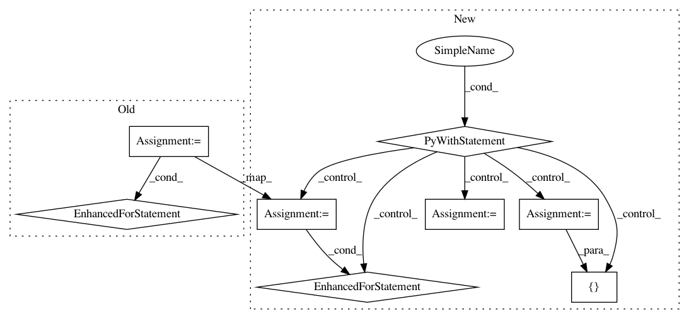

cf0cb3360a77041187c655891da4ddffbe4b13dd,texar/core/optimization.py,AdamWeightDecayOptimizer,apply_gradients,#AdamWeightDecayOptimizer#Any#Any#Any#,443
Before Change
def apply_gradients(self, grads_and_vars, global_step=None, name=None):
See base class.
assignments = []
for (grad, param) in grads_and_vars:
if grad is None or param is None:
continue
param_name = self._get_variable_name(param.name)
m = tf.get_variable(
name=param_name + "/adam_m",
shape=param.shape.as_list(),
dtype=tf.float32,
trainable=False,
initializer=tf.zeros_initializer())
v = tf.get_variable(
name=param_name + "/adam_v",
shape=param.shape.as_list(),
dtype=tf.float32,
trainable=False,
initializer=tf.zeros_initializer())
// Standard Adam update.
next_m = (
tf.multiply(self.beta_1, m) + tf.multiply(1.0 - self.beta_1, grad))
next_v = (
tf.multiply(self.beta_2, v) + tf.multiply(1.0 - self.beta_2,
tf.square(grad)))
update = next_m / (tf.sqrt(next_v) + self.epsilon)
// Just adding the square of the weights to the loss function is *not*
// the correct way of using L2 regularization/weight decay with Adam,
// since that will interact with the m and v parameters in strange ways.
//
// Instead we want ot decay the weights in a manner that doesn"t interact
// with the m/v parameters. This is equivalent to adding the square
// of the weights to the loss with plain (non-momentum) SGD.
if self._do_use_weight_decay(param_name):
update += self.weight_decay_rate * param
update_with_lr = self.learning_rate * update
next_param = param - update_with_lr
assignments.extend(
[param.assign(next_param),
m.assign(next_m),
v.assign(next_v)])
return tf.group(*assignments, name=name)
def _do_use_weight_decay(self, param_name):
Whether to use L2 weight decay for `param_name`.
After Change
def apply_gradients(self, grads_and_vars, global_step=None, name=None):
See base class.
with tf.name_scope(self._name) as name:
assignments = []
for (grad, param) in grads_and_vars:
if grad is None or param is None:
continue
param_name = self._get_variable_name(param.name)
m = tf.get_variable(
name=param_name + "/adam_m",
shape=param.shape.as_list(),
dtype=tf.float32,
trainable=False,
initializer=tf.zeros_initializer())
v = tf.get_variable(
name=param_name + "/adam_v",
shape=param.shape.as_list(),
dtype=tf.float32,
trainable=False,
initializer=tf.zeros_initializer())
// Standard Adam update.
next_m = (
tf.multiply(self.beta_1, m) + tf.multiply(1.0 - self.beta_1, grad))
next_v = (
tf.multiply(self.beta_2, v) + tf.multiply(1.0 - self.beta_2,
tf.square(grad)))
update = next_m / (tf.sqrt(next_v) + self.epsilon)
// Just adding the square of the weights to the loss function is *not*
// the correct way of using L2 regularization/weight decay with Adam,
// since that will interact with the m and v parameters in strange ways.
//
// Instead we want ot decay the weights in a manner that doesn"t interact
// with the m/v parameters. This is equivalent to adding the square
// of the weights to the loss with plain (non-momentum) SGD.
if self._do_use_weight_decay(param_name):
update += self.weight_decay_rate * param
update_with_lr = self.learning_rate * update
next_param = param - update_with_lr
assignments.extend(
[param.assign(next_param),
m.assign(next_m),
v.assign(next_v)])
update_ops = assignments
if global_step is None:
apply_updates = self._finish(update_ops, name)
else:
with tf.control_dependencies([self._finish(update_ops, "update")]):
with tf.colocate_with(global_step):
apply_updates = tf.assign_add(global_step, 1, name=name)
return apply_updates
def _do_use_weight_decay(self, param_name):
Whether to use L2 weight decay for `param_name`.
In pattern: SUPERPATTERN
Frequency: 3
Non-data size: 8
Instances
Project Name: asyml/texar
Commit Name: cf0cb3360a77041187c655891da4ddffbe4b13dd
Time: 2018-11-27
Author: haoranshi97@gmail.com
File Name: texar/core/optimization.py
Class Name: AdamWeightDecayOptimizer
Method Name: apply_gradients
Project Name: pantsbuild/pants
Commit Name: 0093628056bbf454faf35709ee3c61acc133d0e9
Time: 2016-11-05
Author: wisechengyi@gmail.com
File Name: contrib/scrooge/src/python/pants/contrib/scrooge/tasks/thrift_linter.py
Class Name: ThriftLinter
Method Name: execute
Project Name: ncullen93/torchsample
Commit Name: 10b7c76231fe2fd1ee0ab5260ec67a424c37a1a9
Time: 2017-04-28
Author: ncullen@Nicks-MacBook-Pro.local
File Name: torchsample/modules/super_module.py
Class Name: SuperModule
Method Name: fit